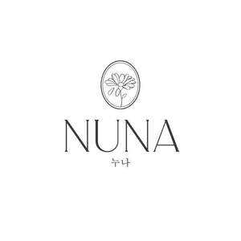

Trade Mark Journal No.2025/051 19 December 2025
UK00004308854 11 December 2025 (3,21)

- Class 3
- Non-medicated cosmetics and toiletry preparations; non-medicated dentifrices; perfumery, essential oils; bleaching preparations and other substances for laundry use; cleaning, polishing and abrasive preparations; abrasive compounds; abrasive preparations; abrasives; abrasives, other than for personal use; animal grooming preparations; aromatic plant extracts; cleaning and fragrancing preparations, other than for personal use; essential oils and aromatic extracts; tailors' and cobblers' wax; toilet preparations; toiletries; non-medicated skin care preparations; skin creams; face creams; day creams; night creams; facial masks; facial beauty masks; sheet masks for cosmetic purposes; cosmetic patches for the skin (non-medicated); cosmetic patches containing sunscreen and sun block for use on the skin; gel eye patches for cosmetic purposes; facial serums; beauty serums; non-medicated skin serums; anti-ageing serums for cosmetic purposes; eye creams; skin toners; facial toners [cosmetic]; toners for cosmetic use; toner pads impregnated with cosmetics; impregnated cleaning pads impregnated with cosmetics; cleaning pads impregnated with cosmetics; cleansing gels; foaming facial cleansers; foaming bath gels; foaming bath liquids; facial cleansers [cosmetic]; exfoliating preparations (non-medicated); exfoliating creams; exfoliating body scrub; exfoliating scrubs for cosmetic purposes; moisturisers; body moisturisers; cosmetic moisturisers; skin moisturisers; sunscreen preparations; cosmetic sunscreen preparations; make-up removers; eye make-up removers; nail polish removers [cosmetics]; facial mists; body mist; cosmetic sprays; cooling sprays for cosmetic purposes; topical skin sprays for cosmetic purposes; mineral water sprays for cosmetic purposes; non-medicated lip balms; toiletry preparations.
- Class 21
- Household or kitchen utensils and containers; cookware and tableware, except forks, knives and spoons; combs and sponges; brushes, except paintbrushes; brush-making materials; articles for cleaning purposes; unworked or semi-worked glass, except building glass; glassware, porcelain and earthenware; articles for the care of clothing and footwear; cosmetic, hygiene and beauty care utensils; cosmetic utensils; make-up brushes; cosmetics brushes; make-up sponges; facial sponges for applying make-up; cosmetics applicators; electric make-up applicators; applicators for applying eye make-up; refillable bottles and dispensers for cosmetic purposes; facial cleansing brushes, electric and non-electric; facial rollers; gua sha facial massage tools; reusable cosmetic pads (not of paper); household utensils for cleaning, brushes and brush-making materials; tableware, cookware and containers; unworked and semi-worked glass, not for building; works of art and decorations, including sculptures, made primarily of ceramics or glass, or of substitutes for these; parts and fittings for all the aforesaid goods.
NUNA Beauty Lab Inc
Representative: Stobbs